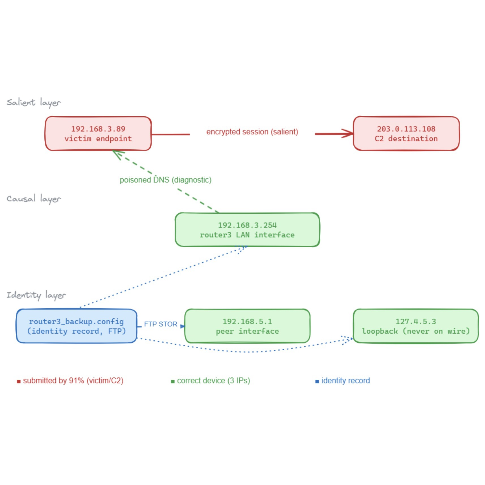

I am a Principal Researcher and Tech Lead at Microsoft, where I work on GitHub Copilot. My current work is the post-training of coding models and the evaluation of the agents built on them: RL post-training for Next Edit Suggestions and Copilot CLI, and process-level evaluation for coding, computer-use, and cybersecurity agents.
I have also worked on Multimodal generation and Responsible AI, taking multimodal content safety models from prototype to General Availability on Azure and publishing at CVPR, ICCV, ICLR, and ICML, supporting products like Azure AI Content Safety and Azure OpenAI. Previously, I have worked on AutoML as part of the Microsoft Custom Vision Service. Multimodal understanding is crucial: computer-use agents can still fail at the perception layer as often as at the reasoning layer, and pixel-precise grounding is a vision problem before it is an agent problem.
I did my Master's in Computer Vision at Robotics Institute, Carnegie Mellon University where I worked with Prof. Kris Kitani on model compression and Hypernetworks. I have also worked at Amazon as a Software Development Engineer. I graduated with a B.Tech. in Computer Science and Engineering from Indian Institute of Technology Ropar with the President of India Gold Medal. I have won the Microsoft Imagine Cup India and Indian National Academy of Engineering Innovate Student Project Award in 2016 for my project SpotGarbage.
I work on three connected problems. Post-training coding models so they improve at tasks that take many steps. Evaluating agents in a way that separates a correct method from a lucky outcome. Grounding agents in real interfaces, where the failure is often perception rather than reasoning.
Coding agents and RL post-training: RL post-training for Next Edit Suggestions and Copilot CLI. (NES blog post)
Shows that outcome-only pass/fail evaluation treats a principled solution and a chaotic trial-and-error process as equivalent, and introduces process-level scoring over 2,614 SWE-agent trajectories that separates lucky passes from solid and ideal solutions.
Learns correct sequential behavior for an autonomous agent from as few as 2 to 10 passing execution traces, combining dominator analysis from compiler theory with multimodal LLM-based semantic understanding to validate new executions without manual specifications.

Codebreaker-Bench: Measuring Skill Composition in AI Agents via Sequential Investigation
Nelson Daniel Troncoso,
Gaurav Mittal,
Yu Hu
In preparation, 2026
A deterministic cybersecurity benchmark for measuring how AI agents compose narrow skills into a coherent investigation, requiring inferential composition of evidence across multiple artifacts rather than a single-step lookup.
Studies pixel-precise cursor grounding for computer-use agents in dense coding interfaces such as VS Code and Cursor, replacing single-shot coordinate prediction with an iterative visual-refinement loop that self-corrects using feedback from prior attempts.
Extends Next Edit Suggestions in GitHub Copilot beyond the local cursor neighborhood to propose edits anywhere in the open file, reducing the friction of manually finding and applying related changes.
Post-trains text-to-video models using rewards aligned by optimal transport, improving visual quality and semantic alignment with the input text without requiring annotated preference data.
Generates dynamic 4D objects from sparse inputs by supervising with foundation-tracker motion priors, jointly preserving appearance and motion coherence across views and time while suppressing artifacts and temporal drift.
A multi-scale normal distributions transform tokenizer that encodes a 3D scene into holistic scene tokens, which transfer across diverse 3D vision-language understanding and reasoning tasks.
Delegates cheap clip-level scanning to a lightweight encoder and reserves the full expert encoder for the clips that matter, cutting the cost of temporal grounding in long untrimmed videos.
Adapts large video foundation models to temporal action localization using long- and short-range adapters, making end-to-end training scale with backbone size instead of requiring a frozen feature pipeline.
A diffusion-based generator that produces diverse images from a multimodal context while preserving scene attributes such as object interactions and spatial relationships, guided by a Multimodal Context Evaluator trained on global semantic and fine-grained consistency rewards.
An exemplar-based contrastive learning approach that learns from logical rules for textual content moderation, keeping the interpretability of hand-written rules while gaining the robustness of a learned model.
The first pretraining scheme for video temporal grounding that trains directly on untrimmed video, removing the mismatch between backbones pretrained on trimmed clips and the untrimmed videos the task actually operates on.
Approaches weakly-supervised temporal action localization as localization rather than frame classification, using action-specific priors as supervision in place of hand-tuned thresholding over per-frame scores.
A bilateral attention transformer for semi-supervised video object segmentation that operates in a joint motion-appearance neighboring space, targeting the case where visually similar objects sit close together.
GateHUB introduces a novel gated cross-attention along with future-augmented history and background suppression objective to outperform all existing methods on online action detection task on all public benchmarks.
First Unsupervised Meta-learning algorithm for Video Few-Shot action recognition. It comprises a novel Action-Appearance Aligned Meta-adaptation (A3M) module that learns to focus on the action-oriented video features in relation to the appearance features via explicit few-shot episodic meta-learning over unsupervised hard-mined episodes.
A novel information-theoretic approach to introduce dependency among features of a deep convolutional neural network (CNN). It jointly improve the expressivity of all features extracted from different layers in a CNN using Additive Information and Multiplicative Information.
A novel data augmentation technique that uses gradient-ascent to generate extra training samples for tail classes in a long-tail class distribution to improve generalization performance of a image classifier for real-world datasets exhibiting long tail. BLT avoids dedicated generative networks for image generation, thereby significantly reducing training time and compute.
A task-aware method to warm-start Hyperparameter Optimization (HPO) methods by predicting the performance for a hyperparamter configuration via a learned task (dataset) representation.
To make talking head generation robust to such emotional and noise variations, we propose an explicit audio representation learning framework that disentangles audio sequences into various factors such as phonetic content, emotional tone, background noise and others. When conditioned on disentangled content representation, the generated mouth movement by our model is significantly more accurate than previous approaches (without disentangled learning) in the presence of noise and emotional variations.
Proposed a method to generate an image incrementally based on a sequence of scene graphs such that the image content generated in previous steps is preserved and the cumulative image is modified as per the newly provided scene information.
Proposed a network architecture that learns long-term and short-term context of the video data and uses attention to align the information with accompanying text to perform variable length semantic video generation on unseen caption combinations.
Combines a variational autoencoder (VAE) with recurrent attention mechanism to create a temporally dependent sequence of frames that are gradually formed over time.
Designed a fully convolutional network to detect and coarsely segment garbage regions in the image. Built a smartphone app, SpotGarbage, deploying the CNN to make on-the-device detections. Also introduced a new Garbage-In-Images (GINI) dataset.
Proposed a novel encode-decoder network for brain extraction from T1-weighted MR images. The model operates on full 3D volumes, simplifying pre- and post-processing operations, to efficiently provide a voxel-wise binary mask delineating the brain region.
Service
Reviewer at ICLR 2022, ECCV 2022, NeurIPS 2022, AAAI 2021
Outstanding Reviewer at ICCV 2021, CVPR 2021, CVPR 2022
{kind=link}